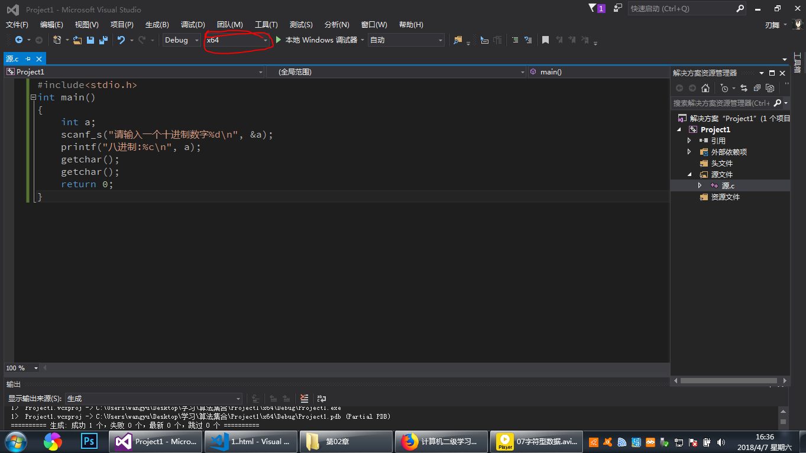

一、基本概念
预编译
预编译要使用#include指令来调用头文件，头文件中包含有库函数等相关信息，在C语言中，任何库函数的调用都需要提前调用头文件,库函数即不是自己定义
的函数,例如printf函数。
stdio.h就是一个头文件，它的文件名是一个缩写，全称是standrad input&output header file(标准输入&输出头文件)。
函数
程序是指令和数据的集合，也可以说程序就是函数。
C语言编写的程序是完全模块化的，模块即由一个个函数组成，函数中包含一个个语句以及子函数，程序几乎所有的工作都由函数完成，函数是C程序的基本单位
。
每个C程序都必须有且仅有一个主函数main，并且主函数main是一个程序的"入口"，无论它处于哪个位置。
一个函数由两部分组成:函数首部、函数体。
函数首部:首部包含函数的基本信息，写法依次是函数类型、函数名、左括号、参数、右括号，括号内可以不写参数或写void，但括号必须写。
函数体:函数体要用大括号{}包起来，函数体又可以分为声明部分、执行部分，声明部分即各种定义，执行部分即各种语句。
程序要求计算机完成的各种操作都是由C语句完成的，C本身并不提供各种语句，它们包含在库函数内，C本身规模小、编译简单、可移植性强。
注释
注释在编译时全部会被计算机忽略，它是给人看的。
单行注释//内容,多行注释/*内容*/，起初C语言中只有多行注释，单行注释是后来的C++的内容，但随着使用人数的增多，C中也添加了单行注释。
声明
声明即创造，告诉计算机创造了一个东西，例如函数、变量等。
声明时一般包括类型、名称等。类型即int、float、double等数据类型
声明对名称有要求，在C语言中，名称可以自定义，可以使用大小写字母、数字、下划线组成，第一个字符必须是字母或下划线,名称区分大小写，即大小写不同
时是不同的两个名称。
一个有趣的事情是，Microsoft的Visual Studio(简称VS)系列编译器支持中文字符，可以使用汉字来定义名称，但如果你这样做那么你的程序在Microsoft
外的编译系统下便无法运行。
代码格式
在代码中加入的空格、缩进(Tab键)大多数是为了人方便识别，快速查看，一般一个缩进代表一层嵌入关系，还有注释，如果你要写一段可能长期使用的代码最好
加上每一步的注释，否则当你日后修改时很大可能会无法看懂它，这时只有两个选择:要么花大量时间去看懂它(这段时间可能比你写下它所用的时间还要长)要么
对这个程序进行重构(即重写)，无论哪一个都是痛苦的过程，这是无数人亲身体验过的教训。
程序中大多数空格在编译时会被忽略，但有些地方必须加空格，例如声明类型和名称之间等。
用VS2015编译器时，生成时要注意将"解决方案"的格式调整为与系统对应的位数，否则运行的程序会闪退，如下图:

转义字符
转义字符是用来表达一些特殊用途的字符，如换行、蜂鸣、打印特殊字符等，它的概念和"字符实体"一样。例如\n表示一个换行。
return语句
return语句用来结束一个函数，它的值必须符合函数的类型，它也是一个函数的返回值,以便另一个函数来调用它。
二、printf函数
printf函数是一个常见的输出函数，很多语言都用它作为输出函数，不过函数名稍微有区别，比如有些是print。
格式:printf("要输出的内容"，参数);
作用:向"标准输出设备"输出字符串,标准输出设备默认指屏幕，其它的还有打印机等其它设备。其中的变量要依靠格式符来输出它的值
三、